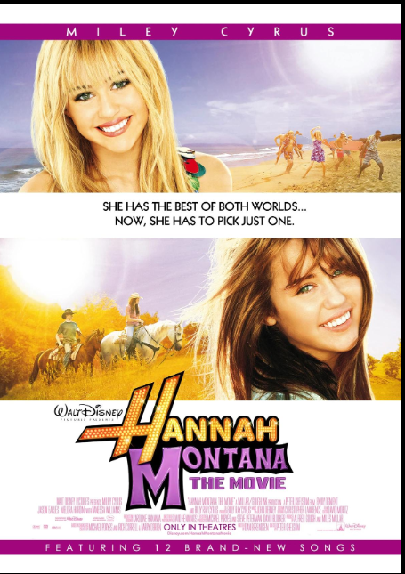

Además de su carrera musical, Miley Cyrus ha desarrollado una trayectoria como actriz en cine y televisión. Su salto a la fama se produjo con la exitosa serie Hannah Montana, donde interpretó a una joven con doble vida, consolidándose como un ícono juvenil a nivel internacional. A partir de ese éxito, participó en distintos proyectos cinematográficos que le permitieron ampliar su registro actoral, como Hannah Montana: The Movie y The Last Song, en los que comenzó a explorar personajes más complejos y maduros. Con el paso del tiempo, su carrera en la actuación ha reflejado una evolución constante, acompañando su crecimiento personal y artístico, y demostrando su versatilidad dentro de la industria del entretenimiento.
